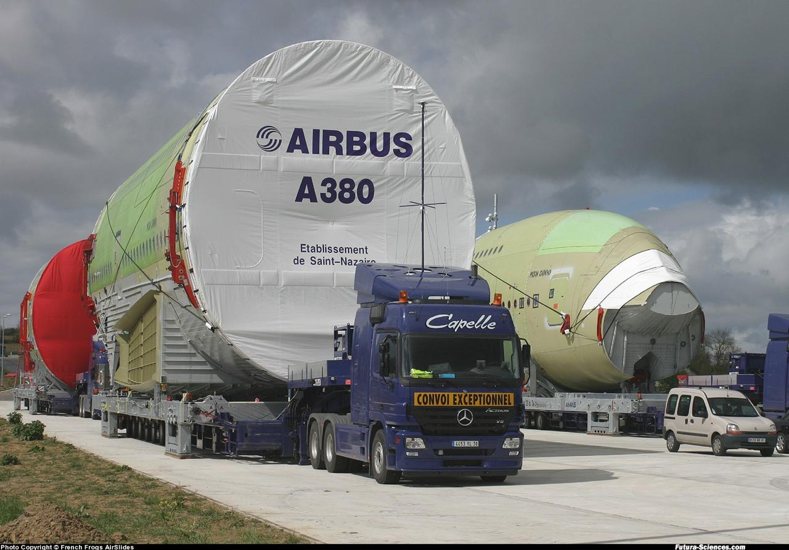

Les différentes parties de l'A380 sont fabriquées dans des usines Airbus réparties à travers l'Europe :
Les ailes sont produites à Broughton, au Royaume-Uni, et à Brême, en Allemagne.
Le fuselage est fabriqué en grande partie à Hambourg, en Allemagne.
L'empennage horizontal provient de Cadix, en Espagne.
Les sections avant et arrière sont produites à Saint-Nazaire, en France.
Assemblage final
L'assemblage final a lieu dans l'usine Airbus de Toulouse, en France.
C'est là que les ailes, le fuselage, et les moteurs sont montés ensemble.
Une fois assemblé, chaque avion subit des tests rigoureux pour garantir sa
sécurité et ses performances.
Aménagement intérieur et peinture
Après l'assemblage, les appareils sont envoyés à Hambourg, en Allemagne,
où ils sont peints aux couleurs des compagnies aériennes et équipés selon
leurs exigences (sièges, cabines de luxe, bars, etc.).
2. Logistique exceptionnelle
Transport maritime
Des navires spéciaux comme le Ville de Bordeaux transportent les sections
géantes entre les usines européennes.
Transport terrestre
Sur des routes spécialement aménagées, des convois routiers transportent des
pièces comme les ailes jusqu'à l'usine de Toulouse.
Avion Beluga
L'Airbus Beluga, un avion-cargo surdimensionné, est utilisé pour transporter
des composants plus petits.
Tableau sur le transport des matériaux relatives à l'Airbus A380
Type de transport
Utilisation
Navire (Ville de Bordeaux)
Transport des sections géantes par mer
Camions spéciaux
Acheminement des ailes et du fuselage sur route
Airbus Beluga
Transport des pièces moyennes entre les usines
3. Innovations dans la production
Utilisation de matériaux composites
Ces matériaux, comme la fibre de carbone, rendent l'avion plus
léger tout en maintenant une grande solidité.
Production en réseau
La collaboration entre plusieurs pays a permis à Airbus d'utiliser
les meilleures compétences de chaque site.
Simulations numériques
Des logiciels avancés ont été utilisés pour optimiser la conception et
réduire les erreurs dans la production.
Assemblage automatisé
Des outils robotisés ont accéléré certaines étapes de l'assemblage,
garantissant précision et efficacité.
4. Fin de la production
En 2019, Airbus a annoncé l'arrêt de la production de l'A380, avec
la dernière livraison réalisée en 2021. La demande des compagnies aériennes s'est tournée vers des appareils plus petits et plus économiques, ce qui a marqué la fin de l'avion emblématique.

Transport d'une aile de l'Airbus A380 par convoi routier vers Toulouse.